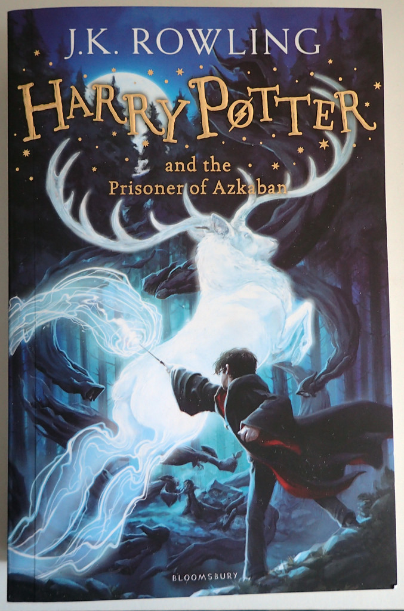
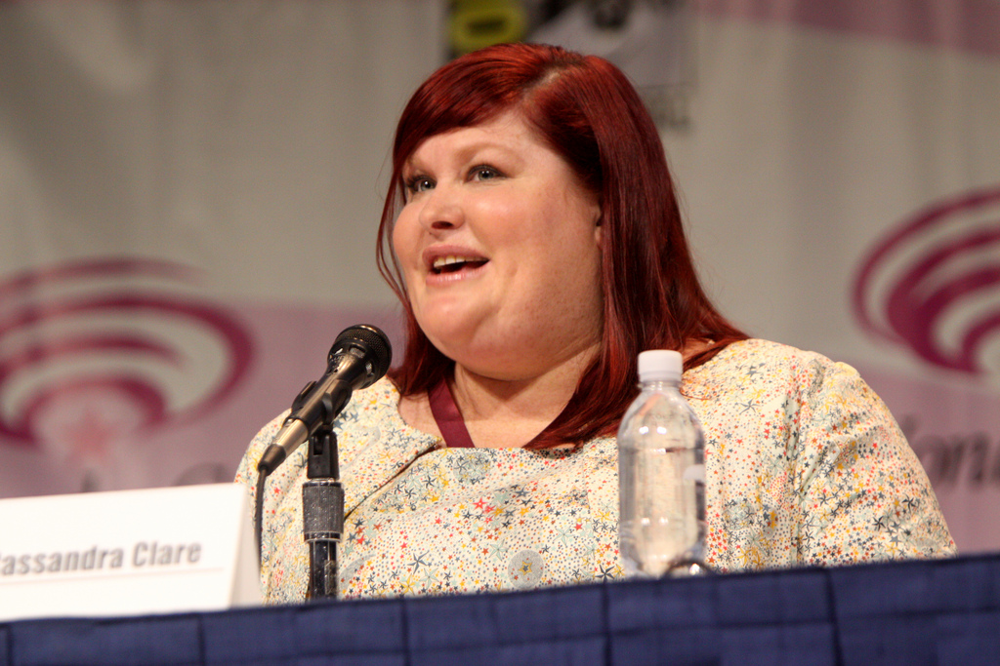
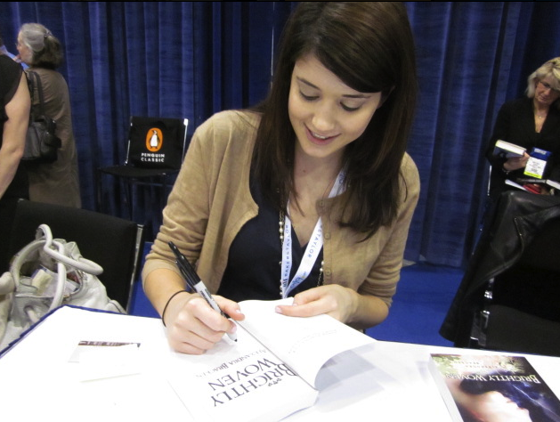
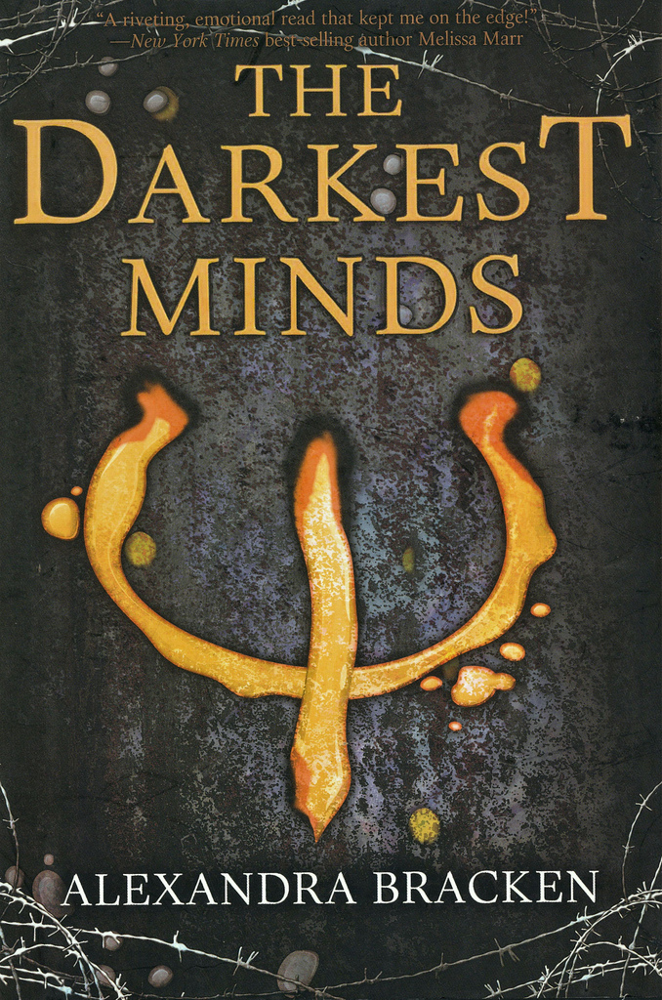
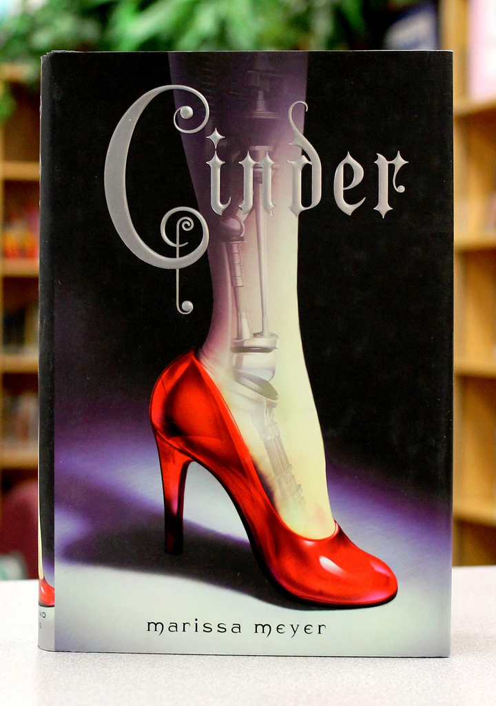

April 2018- The Cursed Child opened on Broadway
October 2018- the new Harry Potter: A History of Magic exhibition opens in New York
November 2018- the 2nd Fantastic Beasts movie (The Crimes of Grindelwald) premieres

The Infernal Devices
The Dark Artifices

December 2018- The Dark Artifices book 3 is released
Early 2019- A new trilogy called 'The Last Hours' is supposed to be released

The Passenger Series
Prosper Reading

July 31st 2018- The Darkest Legacy is released
August 3rd 2018- The Darkest Mind movie premieres
Renegades
Stand Alone

June 2018- Speaking on panels and signing autographs at BookCon in New York City
November 2018- Renegades book 2 is released